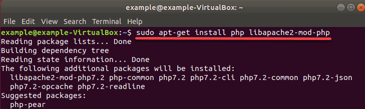
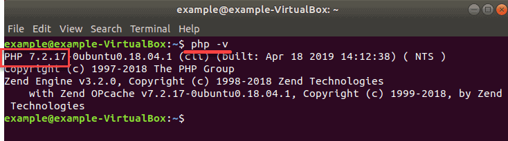
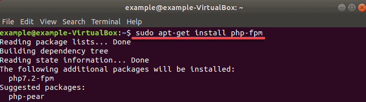
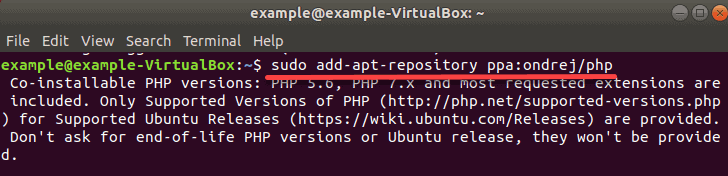
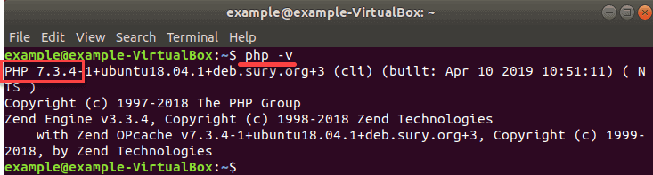

Introduction
PHP stands for Hypertext Preprocessor, and it’s a script-based server-side programming language.
PHP is often used to automate server tasks. It handles tasks like dynamic content, database requests, and processing and displaying data.
Read our tutorial on how to install PHP 7.2 or 7.3 on Ubuntu 18.04 including integration with Apache and Nginx.

Prerequisites
- Access to an Ubuntu user account with sudo privileges
- Access to a command line/terminal window (Ctrl-Alt-T)
- A running web server (Apache or Nginx)
Installing PHP 7 on Ubuntu
Like many developer tools, PHP has several different release versions.
By default, PHP 7.2 is included in Ubuntu 18.04. At the time of writing, PHP 7.3.1 was released. It was tagged as a release of a “stable” version of the software. A stable release is well-tested and is designed to be used and supported for a longer period
How to Install PHP 7.2 with Apache on Ubuntu
Update Ubuntu
Ensure you are using the latest Ubuntu updates by entering the following command into a terminal window:
apt-get update && apt-get upgradeInstall PHP 7.2
1. To install PHP 7.2, enter the following command:
sudo apt-get install php libapache2-mod-phpConfirm the installation by hitting Enter. The system will download and install PHP from the software repositories. This command also installs dependencies and modules for use with Apache.

2. Verify PHP was installed, with the command:
php -v
3. Restart the Apache service to apply the changes:
sudo systemctl restart apache2How to Install PHP 7.2 with Nginx on Ubuntu 18.04
Update Ubuntu to Latest Version
Entering the following command into a terminal window to ensure you are using the latest software:
apt-get update && apt-get upgradeInstall PHP 7.2 with Nginx
1. To install PHP for Nginx, enter the following command:
sudo apt-get install php-fpmThe system will reach out to download and install the package and its dependencies.

2. Once installation finishes, restart the service by entering:
sudo systemctl restart nginxThis will apply any changes.
3. If you are using Nginx, you must be familiar with configuring server blocks.
First, add the following code to your server block file for Nginx to make use of PHP:
server {
# . . . existing configuration
location ~ \.php$ {
include snippets/fastcgi-php.conf;
fastcgi_pass unix:/run/php/php7.2-fpm.sock;
}
}4. Save the file and exit. Then, restart Nginx on Ubuntu with:
sudo systemctl restart nginxHow to Install PHP 7.3 on Ubuntu 18.04
Update Ubuntu Server
The Ubuntu repositories still point at PHP 7.2.
However, a stable release of PHP 7.3 is available from the developers.
Update the Ubuntu server with the command:
apt-get update && apt-get upgradeAdd the PHP repository
1. To add this repository, you’ll need to add software-properties-common:
sudo apt-get install software-properties-common2. Next, add the new ondrej repository:
sudo add-apt-repository ppa:ondrej/php
The system will ask for confirmation – hit enter, and allow the process to complete.
3. Update your package list:
sudo apt-get updateInstall PHP 7.3
Now, you can install PHP 7.3 software (and dependencies) by entering the command:
sudo apt install php7.3 php7.3-common php7.3-opcache
php7.3-cli php7.3-gd php7.3-curl php7.3-mysqlTo verify installation and check the version of your local PHP use:
php –v
Conclusion
You should now understand how to install PHP on Ubuntu.
One important thing to remember is that PHP works in tandem with an existing server, so you need to install it specifically to your server software. Alternatively, you can always install a stable version from the default Ubuntu software repositories.
Next you should also read